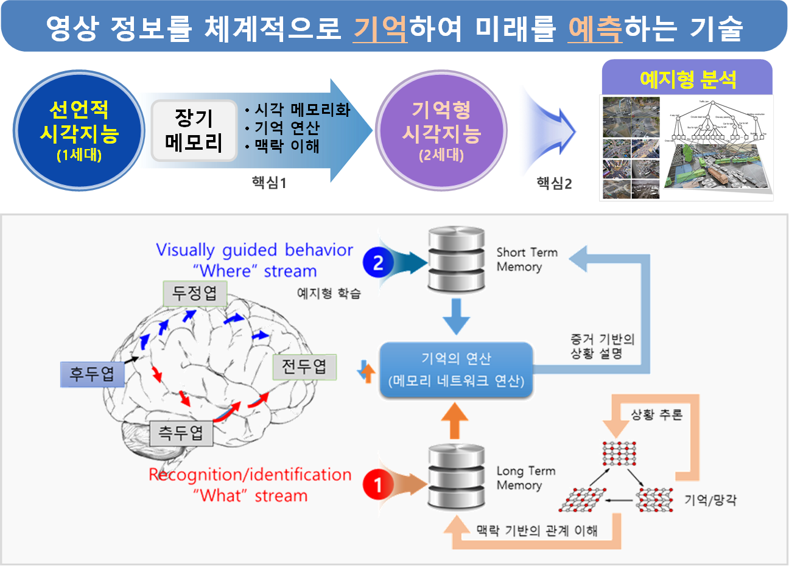
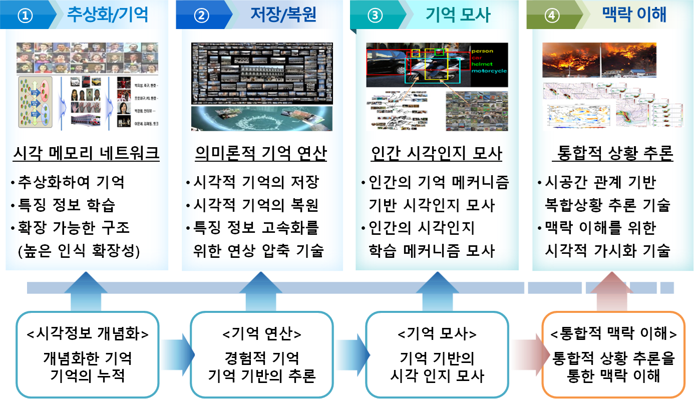
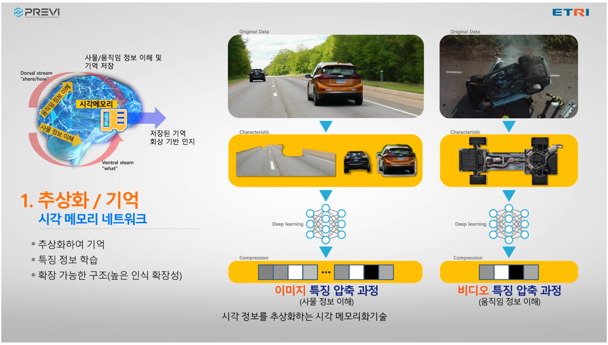
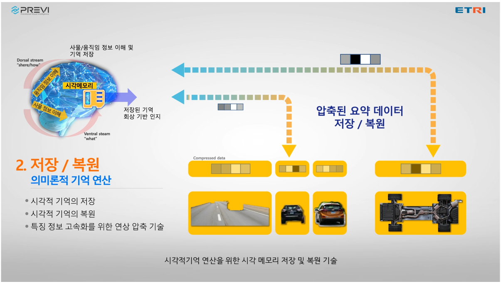
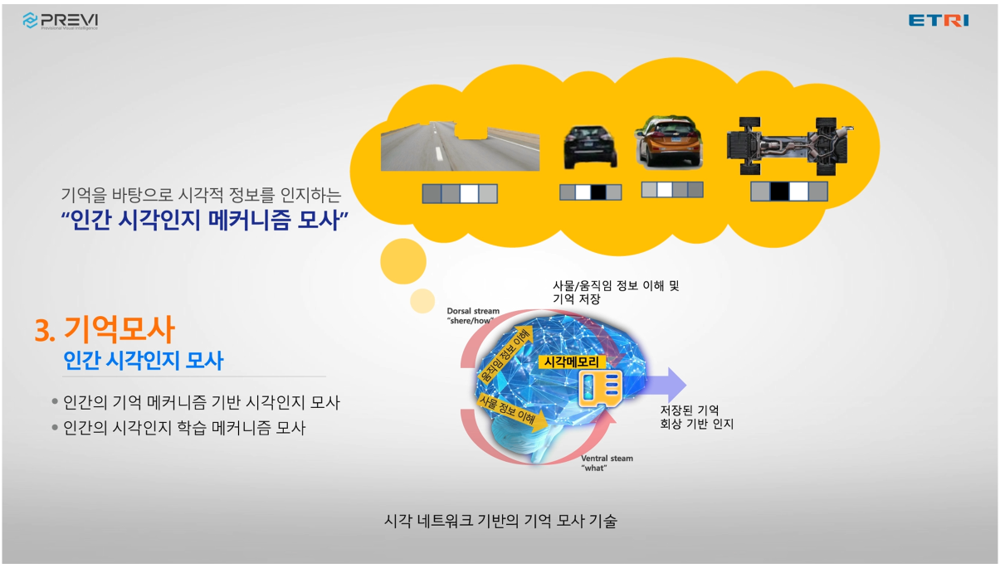
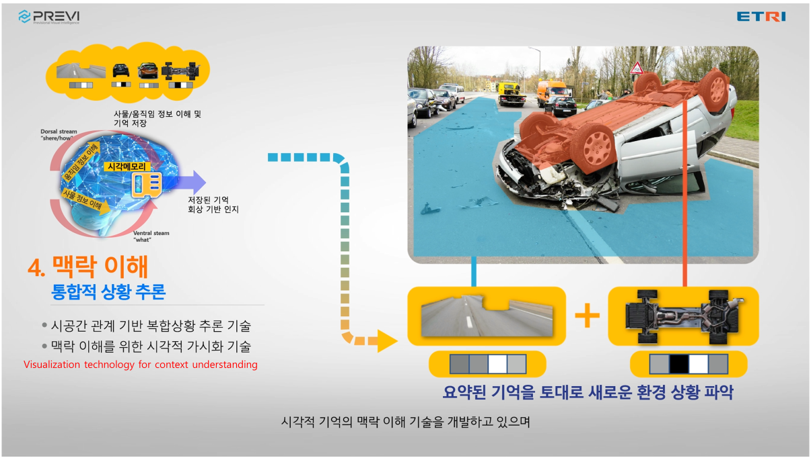

장기 시각 메모리 네트워크 기반의 예지형 시각지능 핵심기술 개발
연구기간: 2020.01 ~ 2027.12

기술문의: 문진영 책임연구원 (jymoon@etri.re.kr), 김형일 선임연구원(hikim@etri.re.kr)
연구소개 동영상
연구내용
단계별 연구내용
- 1단계(3년): 시각정보의 추상화 및 저장·복원 기술 개발
- 시각정보를 표현하고 검색하기 위한 시각언어 (Visual Language) 기술 개발, 시각정보의 추상화 및 기억 저장을 위한 시각 메모리 네트워크 개발
- 2단계(3년): 시각 메모리 네트워크 기반의 상황 추론·인지 기술 개발
- 장단기 시각 메모리 기반의 상황 인식 및 추론 기술 개발, 맥락 정보 융합을 통한 관계 이해 및 상황 인지 기술 개발
- 3단계(2년): 증거 기반의 상황 예지형 시각지능 기술 개발 - 맥락 이해를 위한 증거 기반의 상황 디스크립션 기술 개발, 멀티모달 기반의 메타 학습을 통한 미래 상황 예측 기술 개발
주요 개발기술

[추상화/기억] 시각정보 개념화를 위한 추상화/기억 기술 개발

[저장/복원] 경험적 기억 기반의 저장/복원 기술 개발

[기억모사] 인간의 기억 메커니즘 기반 시각인지 모사 기술 개발

[맥락이해] 통합적 상황 추론을 통한 맥락 이해 기술 개발

연구실적(논문/학술대회)
[International Journals]
- Sumin Lee, Hyunjun Eun, Jinyoung Moon, Seokeon Choi, Yoonhyung Kim, Chanho Jung, and Changick Kim, "Learning to Discriminate Information for Online Action Detection: Analysis and Application," accepted to IEEE Transactions on Pattern Analysis and Machine Intelligence (TPAMI), 2022. [Link] [SCI, IF: 24.314]
- Hyung-Il Kim, Kimin Yun, and Yong Man Ro, "Face Shape-Guided Deep Feature Alignment for Face Recognition Robust to Face Misalignment," IEEE Transactions on Biometrics, Behavior, and Identity Science, vol. 4, no. 4, pp. 556-569, 2022. [Link]
- Sung-Jin Lee, Jun-Seok Yun, Eung Joo Lee, and Seok Bong Yoo. "HIFA-LPR: High-Frequency Augmented License Plate Recognition in Low-Quality Legacy Conditions via Gradual End-to-End Learning," Mathematics, vol. 10, no. 9: 1569, 2022. [Link]
- Jungkyoo Shin and Jinyoung Moon, "Learning to combine the modalities of language and video for temporal moment localization," Computer Vision and Image Understanding, vol. 217, pp. 103375, 2022. [Link]
- Hyundong Jin, Kimin Yun, and Eunwoo Kim, "Gating Mechanism in Deep Neural Networks for Resource-Efficient Continual Learning," IEEE Access, vol. 10, pp. 18776-18786, 2022. [Link]
- Hye-Jin Lee, Yongjin Kwon, and Sun-Young Ihm, "Dual-ISM: Duality-Based Image Sequence Matching for Similar Image Search," Applied Sciences, vol. 12, no. 3: 1609, 2022. [Link]
- Jun-Seok Yun, and Seok-Bong Yoo, "Single Image Super-Resolution with Arbitrary Magnification Based on High-Frequency Attention Network," Mathematics, vol. 10, no. 2: 275, 2022. [Link]
- Sung-Jin Lee and Seok Bong Yoo, “Super-resolved Recognition of License Plate Characters,” Mathematics, vol. 9, no. 19, pp. 2494, 2021. [Link]
- Hyunjun Eun, Jinyoung Moon, Jongyoul Park, Chanho Jung, and Changick Kim, "Temporal Filtering Networks for Online Action Detection," Pattern Recognition, vol. 111, 2021. [Link] [SCI, IF: 7.74, JCR: 11.87%]
- Jungkyoo Shin and Jinyoung Moon, "Multi-Perspective Attention Network for Fast Temporal Moment Localization," IEEE Access, vol. 9, pp. 116962-116972, 2021. [Link] [SCI, IF: 3.367, JCR: 34.25%]
- Hyung-Il Kim and Seok Bong Yoo, "Trends in Super-High-Definition Imaging Techniques based on Deep Neural Networks," Mathematics, vol. 8, no. 11, 2020. [Link] [SCI, IF: 1.747, JCR: 8.462%]
[International Conferences]
- Youngwan Lee, Jonghee Kim, Jeffrey Willette, and Sung Ju Hwang, "MPViT: Multi-Path Vision Transformer for Dense Prediction," IEEE/CVF Conf. Computer Vision and Pattern Recognition (CVPR), 2022, pp. 7277-7286. [Link]
- Sangmin Lee, Hyung-il Kim, and Yong Man Ro, "Weakly Paired Associative Learning for Sound and Image Representations via Bimodal Associative Memory," IEEE/CVF Conf. Computer Vision and Pattern Recognition (CVPR), 2022, pp. 10524-10533. [Link]
- Jun-Seok Yun, Youngju Na, Heehyeon Kim, Hyung-Il Kim, and Seok Bong Yoo, “HAZE-Net: High-frequency Attentive Super-resolved Gaze Estimation in Low-resolution Face Images,” Asian Conference on Computer Vision (ACCV) 2022, pp. 3361-3378.
- Sungjune Park, Dae Hwi Choi, Jung Uk Kim, and Yong Man Ro, "Robust Thermal Infrared Pedestrian Detection By Associating Visible Pedestrian Knowledge," International Conference on Acoustics, Speech and Signal Processing (ICASSP), 2022, pp. 4468-4472. [Link]
- Sunah Min and Jinyoung Moon, "Information Elevation Network for Online Action Detection and Anticipation," Conference on Computer Vision and Pattern Recognition Workshops (CVPRW), 2022, pp. 2550-2558. [Link]
- Je-Seok Ham, Kangmin Bae, and Jinyoung Moon, "MCIP: Multi-Stream Network for Pedestrian Crossing Intention Prediction," European Conference on Computer Vision Workshops (ECCVW), 2022, pp. 1-17.[Link]
- Sangmin Lee, Hak Gu Kim, Dae Hwi Choi, Hyung-Il Kim, and Yong Man Ro, “Video Prediction Recalling Long-term Motion Context via Memory Alignment Learning,” IEEE/CVF Conf. Computer Vision and Pattern Recognition (CVPR), 2021, pp. 3053-3062. [Link]
- Kimin Yun, Hyungil Kim, Kangmin Bae, and Jongyoul Park, “Unsupervised Moving Object Detection through Background Models for PTZ Camera,” in Proc. Int’l Conf. Pattern Recognition (ICPR), 2020, pp. 3201-3208.
- Minsu Kim, Joanna Hong, Junho Kim, Hong Joo Lee, and Yong Man Ro, “Unsupervised Disentangling of Viewpoint and Residues Variations by Substituting Representations for Robust Face Recognition,” in Proc. Int’l Conf. Pattern Recognition (ICPR), 2020.
- SunAh Min and Jinyoung Moon, “Online Fall Detection using Attended Memory Reference Networks,” in Proc. IEEE Int’l Conf. Artificial Intelligence in Information and Communication (ICAIIC), 2021.
- Jung Kyoo Shin and Jinyoung Moon, “Fast Temporal Information Retrieval in Videos with Visual Memory,” in Proc. IEEE Int’l Conf. Artificial Intelligence in Information and Communication (ICAIIC), 2021.
[Domestic Journals]
- 윤준석, 이성진, 유석봉, 한승회, “임의배율 초해상도를 위한 하이브리드 도메인 고주파 집중 네트워크,” 한국정보통신학회논문지, vol. 25, no. 11, pp. 1477-1485, 2021.
- 이성진, 김태준, 이충헌, 유석봉, “객체 인식 정확도 개선을 위한 이미지 초해상도 기술,” 한국정보통신학회논문지, vol. 25, no. 6, pp. 774-784, 2021. [Link]
- 문진영, 김형일, 이용주, “온라인 행동 탐지 기술 동향,” 전자통신동향분석, vol. 36, no. 2, pp. 75-82, 2021. [Link]
- 문진영, 김형일, 박종열, “시간적 행동 탐지 기술 동향,” 전자통신동향분석, vol. 35, no. 3, pp. 20-33, 2020. [Link]
[Domestic Conferences]
- 설무아, 문진영, "트랜스포머 기반 비디오 의미 구간 탐지에 대한 연구," 한국소프트웨어종합학술대회, 2022.
- 함제석, 김보경, 문진영, "어린이 보호 구역에서 보행자의 횡단 의도 예측," 한국컴퓨터종합학술대회, 2022.
- 김진아, 송길재, 배강민, 윤기민, 배유석, "사람 자세상태 인식 향상을 위한 다중 작업 학습용 백본모델 및 데이터셋 조합 연구," 한국컴퓨터종합학술대회, 2022.
- 이이삭, 홍영기, 윤준석, 김병수, 유석봉, "이미지 캡셔닝 기반 멀티 모달 복합 감정인식 기술," 한국컴퓨터종합학술대회, 2022.
- 송길재, 김진아, 배강민, 윤기민, 배유석, "다중 카메라 입력 인식 모델을 위한 배치 추론 및 이벤트 알람 전송 프레임워크," 한국컴퓨터종합학술대회, 2022.
- 최동민, 문예빈, 오태현, 권영진, 김준식, "약지도 퓨샷 객체 분할을 위한 완전 컨볼루션 네트워크," 영상처리 및 이해에 관한 워크샵, 2022.
- 김지연, 오태헌, "3D 환경을 고려한 행동 기반 사람 자세 생성," 영상처리 및 이해에 관한 워크샵, 2022.
- 문예빈, 오태헌, "Self-supervised Few-shot Learning by Episodic Instance Discrimination," 영상처리 및 이해에 관한 워크샵, 2021.
- 이성진, 이충헌, 김태준, 유석봉, “이미지 초해상도 기반 객체 인식 성능 향상에 관한 연구,” 한국디지털콘텐츠학회 학술발표대회, 2020.
[Preprint]
- Sangmin Lee, Hak Gu Kim, Dae Hwi Choi, Hyung-Il Kim, and Yong Man Ro, “Video Prediction Recalling Long-term Motion Context via Memory Alignment Learning,” arXiv preprint arXiv:2104.00924. [Link]
- Youngwan Lee, Hyung-Il Kim, Kimin Yun, and Jinyoung Moon, “Diverse Temporal Aggregation and Depthwise Spatiotemporal Factorization for Efficient Video Classification,” arXiv preprint arXiv:2012.00317. [Link]
Acknowledgement
This work was supported by Institute for Information &
Communications Technology Promotion (IITP) grant funded
by the Korea government (MSIT) [No.2020-0-00004, Development of Previsional Intelligence based on Long-term Visual Memory Network).].